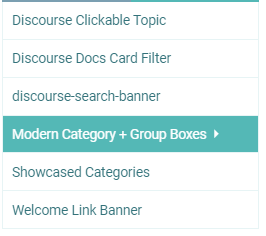

EDIT: Ignore all of the below. The issue was the Discourse Topic List Author component.
Also, any idea what happened to this bar? I refreshed my page last night and it randomly turned into this and I can’t figure out how to fix it. It still looks fine on mobile, though. The bar is really wide now and when you click on it, the text color is the same color (in light and dark modes) and things aren’t fully in the box now.
Kind of messy how it is currently. Maybe “Reply” could be moved next to the “2/2” area/wrench icon and Tracking could be moved next to Topic Controls. Something more clean.
Also, the Discourse Topic List Author component makes the little box at the bottom become really wide for some reason. Any way around this? Took forever for me to figure out it was this component causing the issue, haha.
I think the default theme has same alignment. I don’t think we should change this. Anyway users don’t have wrench button.
I don’t think the Topic List Author theme component is compatible with this theme. As both the FKB theme and the Topic List Author are override the topic list item template.
Thanks a ton! Will check these out in a minute. Quick question, though:
What’s the proper way to update this theme if I’ve forked it on GitHub?
Basically, I forked it, I make my own changes locally & push the updates to my GitHub and then update the theme in my site’s Admin themes panel. But how do I update it by keeping what I’ve changed locally while also including the changes you make to it? When I go to sync my fork of the theme with the changes you make, I get this:
So if I discard my own changes, won’t that make all of my changes disappear? I want to keep the edits I’ve made while also receiving the changes you make to the core of the theme.
EDIT: I updated theme with your latest edits. Looks like Tracking area/icon are adjusted to the left of the screen now and the “2/2” page area is now rounded. Is this correct? It does look a little better on mobile now, but even on a regular user account, there’s still that awkward empty space on mobile next to the page number.
EDIT 7hrs later: So, does this theme not have options for “selected” and “hover” on the color schemes? I see all of the color options except the last 2: selected & hover.
Hey, @Don, in addition to my above reply, is it possible to make something so that instead of longer posts having “Read more…” on them and once clicked, it making you enter the topic, it will instead show all of the topic’s content dropped down instead of entering the actual topic? Like how actual FaceBook works/worked?
EDIT 17hrs later: Also, is there a way to have the comment button on the main forums page take you directly to the comments instead of picking the original or most recent post?
Thanks for the awesome theme!
I was wondering how I could change the settings to have the third badge style below, as my site currently shows the first badge style
The text still extends beyond the screen on the right.
And regarding the category boxes, they haven’t done this with any of the other themes I previously used or the default theme. It might be because this theme has a sidebar on the right, which the other ones don’t have, so now the three columns have to squeeze into the middle?
These are the components I’m using:

The same issue happens with the main categories page:
It looks like the line break for the screen size is too late, causing the boxes to become too small for the text, then it cuts off the text.
but I don’t see “highlight-background” in the GitHub repo. I know how to change it locally, but if I change it from var(--primary-low); to #000000;, for example, it effects both modes. How do I have a different color for each mode? Note: this also effects the bottom area here, which I also need different for each mode:
Also, is there a way to have the comment button on the main forums page take you directly to the comments instead of picking the original or most recent post?
Hey, @Don, did one of your recent updates to the theme break installing it? My export that I happened to have from yesterday uploads fine, but when I fork the most recent version and try to install a .zip of it or from the GH repository, I get a 500 Error.
In my Logs, I get:
Failed to process hijacked response correctly : ActiveRecord::RecordNotUnique : PG::UniqueViolation: ERROR: duplicate key value violates unique constraint “theme_field_unique_index”
DETAIL: Key (theme_id, target_id, type_id, name)=(50, 5, 1, common/fkb-c-alternative-voting-category) already exists.
Everytime I try to import the theme, the theme_id is going up by one, so it isn’t a theme_id issue at least…
It seems you created a stylesheets folder which duplicates the scss folder files. This cause the problem because the files duplicated and it tried to import from both folders. If you want to make changes on the style then please create a new theme component or change it in the scss folder or you can use stylesheets name too for folder, but not both. But it is better to keep scss as used by the main repo.
Hi, I’m unsure how this is happening. I have a “stylesheets” folder in every backup from when I backup the theme; I never created it myself. It looks like this and I’ve done a lot of changes to files in it.
Yeah, this is because you export it from admin? I assume this folder contains your modification. I am not sure which version is this I made some changes in these days. But you can upload these files into the scss folder.
EDIT 6hrs later: Also, would your theme work properly if I combined all of the .scss files into one big file? I am trying to optimize my site as much as possible and some performance test sites say it has to load a lot of css & js files, mainly from the theme. It recommended cutting down on files and put stuff into one.
Is there any plugin out there that has a “friend” concept such that you would have to accept a friend request in order for someone to see be able to see your posts in their feed?
Thanks @Moin. As far as I can tell with that plugin anyone can follow anyone (like Twitter public users) but there is no concept of approving a follow or a friend request for access.
For iOS web app view, the select and +topic buttons are halfway hidden by the system’s navigation bar. This wasn’t a problem before, was this caused by a FKB update?
Thank you very much!
One other questions:
Does this theme support the full width plugin? After I enabled the full width plugin, I found that the left navigation bar was not displayed on the left. And when I closed the left navigation bar, the style became strange.
The sidebar is causing an extra white section below. I previously installed the “Easy Responsive Footer - theme-component - Discourse,” but I uninstalled it and don’t know how to fix it. When I click the button below, it disappears. This is my forum address: https://www.justnainai.com/
Not a biggie, for me anyway. FKB isn’t an admin-friendly theme if there is a need for any bulk actions, so I just disabled that component. But because FKB is the only theme that is affected, I’m here.
[quote=“Mathx, Beitrag:350, Thema:234323, Benutzername:ozkn”]
How do I move the fixed buttons I showed in the photo below in the first section?
[/Zitat]
Hey guys, first of all thank you for this theme. Until “Central” is publicly and steadily released, this is my most favourite Theme.
For some reasons, (it might be my own fault ) the FKB Panel doesnt show up anymore in my forum. What may be some exotic reasons for that? Ive already tried by trial and error by clicking/unlicking all theme options, without success.
Is there a way to hide both the FKB Panel to the right and this other Panel to the left, in certain categories? Unfortunately it is overlaying the KanBan Components, when not in Expanded view
Hi Don, your theme rocks! Thansk for all your hard work. I am loving it!
I noticed a bug with the Topic List Thumbnails component. Attaching screenshots of the bug below. (tested with grid and masonry option).
It would be amazing if you could fix that.
I am trying to achieve a grid view as in here: Resources | Framer
PS: I’m open to use another component alternative too that would achieve a similar grid.
That was a box-shadow on the bulk select what I mistakenly added to the topic list header and when the bulk select wasn’t available the topic list header box-shadow appeared as seen on you screenshot. Now I’ve added the box-shadow to the bulk select button which fixed this visual glitch.
I’ve added a new setting with you can disable the FKB topic list modifications. So after that possible to simple add other theme components like: Topic List Thumbnails


, \"Sivustot\" (likely \"Sites\"), a search icon, and categories like \"Ihminen, luonto & maailma\" (possibly \"Humans, Nature & World\"). (Captioned by AI) (750×290 56.1 KB)")
")
 (1903×906 173 KB)")
{kind=link}
{kind=link}
{kind=link}
{kind=link}
{kind=link}
{kind=link}
{kind=link}
{kind=link}
{kind=link}
{kind=link}
{kind=link}
{kind=link}
{kind=link}
{kind=link}
{kind=link}
{kind=link}
{kind=link}
{kind=link}
{kind=link}
{kind=link}
{kind=link}
{kind=link}
{kind=link}
{kind=link}
{kind=link}
{kind=link}
{kind=link}
{kind=link}
{kind=link}
{kind=link}
{kind=link}
{kind=link}
{kind=link}
{kind=link}